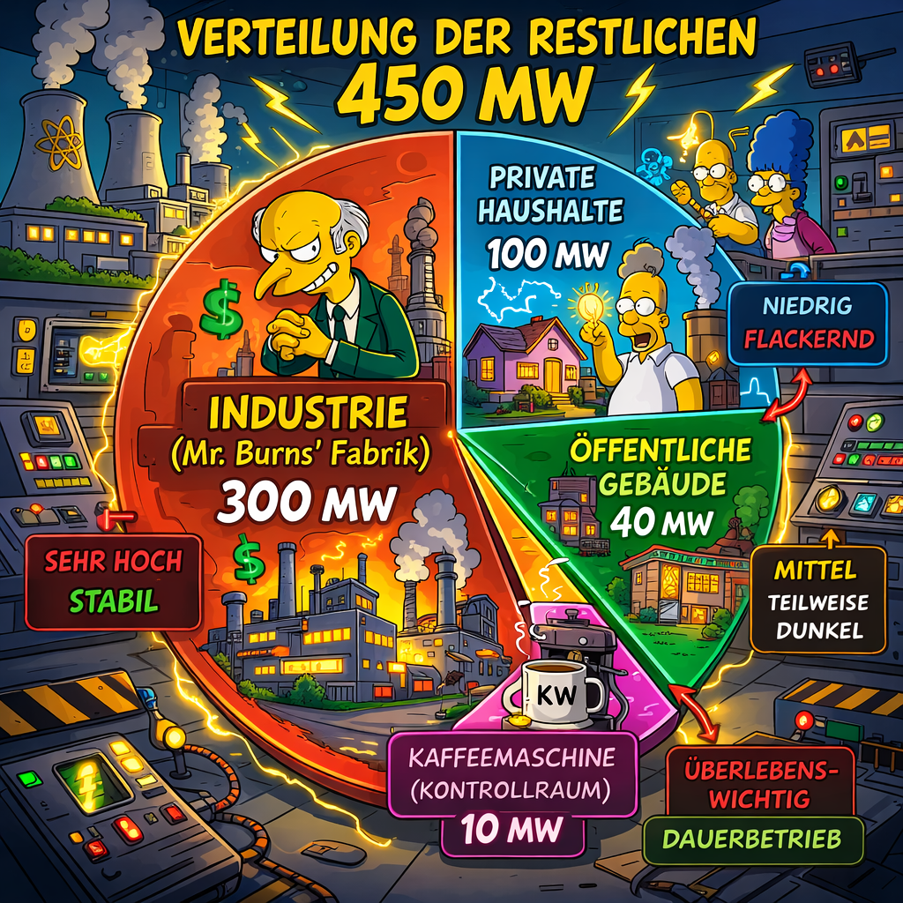

Der 450-MW-Realitätscheck

Willkommen in der harten Realität. Da uns die Korrosion 750 MW unserer Nennleistung (1200 MW) weggefressen hat, müssen wir die verbleibenden 450 MW extrem vorsichtig verteilen. In einem automatisierten System würde hier jetzt eine rote Warnleuchte blinken – bei uns übernimmt das ein Praktikant mit einer Taschenlampe.
Verteilung der restlichen 450 MW
| Sektor | Verbrauch (MW) | Priorität | Status |
|---|---|---|---|
| Industrie (Mr. Burns' Fabrik) | 300 MW | Sehr Hoch | Stabil |
| Private Haushalte | 100 MW | Niedrig | Flackernd |
| Öffentliche Gebäude | 40 MW | Mittel | Teilweise Dunkel |
| Kaffeemaschine (Kontrollraum) | 10 MW | Überlebenswichtig | Dauerbetrieb |
Besonderheiten der aktuellen Lastkurve
- Bei Korrosionsschüben im Reaktor 2 sinkt die Haushaltsleistung auf 10 MW (Kerzen bereithalten!)
- Die 750 MW Lücke wird derzeit durch "positives Denken" und die Baustellen der Erneuerbaren überbrückt
- Spitzenlasten werden durch manuelles Abschalten ganzer Stadtteile ausgeglichen
Sollte die Anzeige unter 400 MW fallen, hören Sie eine Sirene. Bitte ignorieren Sie diese, wir testen nur die Lautsprecher.